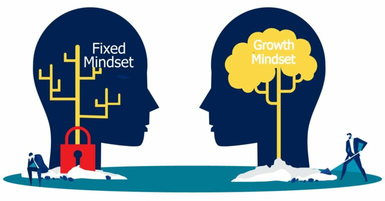

Neuroplasticity, or the capacity for our brain cells to change in response to our behaviour,
can help us more
thoughtfully engage in activities that will contribute to our well-being no matter our age.
The brain is a highly active and malleable learning machine across a person’s lifespan.
We can influence our brain development in positive or negative directions. The more we engage and challenge our
mind and body, the longer our brains function at a high level. The more the brain is exercised, the stronger and
more connected it becomes.
Individuals who believe their talents can be developed (through hard work, good strategies, and input from
others) have a growth mindset . They tend to achieve more than those with a more fixed mindset
(those who believe
their talents are innate gifts). This is because they worry less about looking smart and they put more energy into
learning. When entire companies embrace a growth mindset, their employees report feeling far more empowered and
committed; they also receive far greater organizational support for collaboration and innovation.

The neuroplasticity with a growth mindset helps me with my learning in many ways. After understanding both, I believe I can increase my intelligence through the right learning strategies and effort. I can do it better and better every time I practice more, even though I'm might not talented.